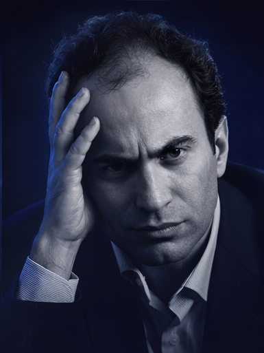
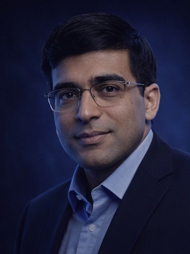
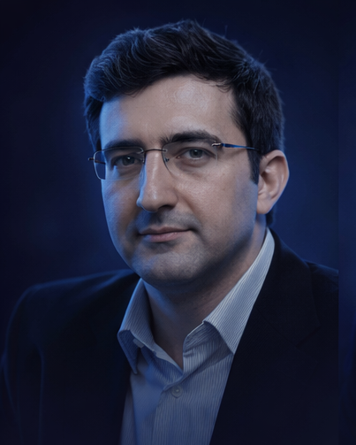
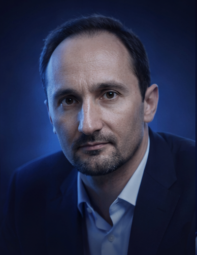
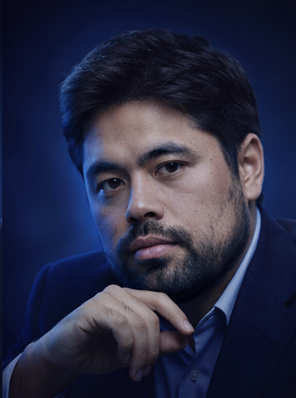
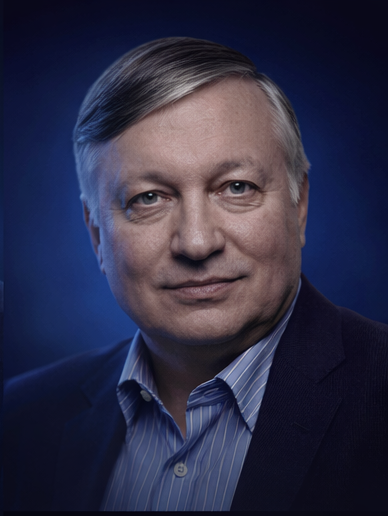
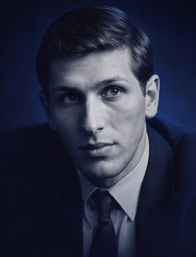
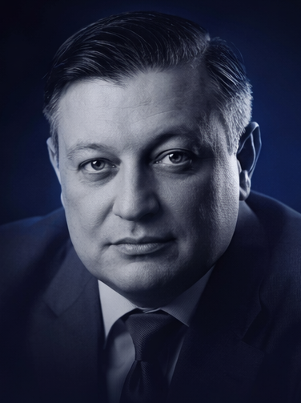
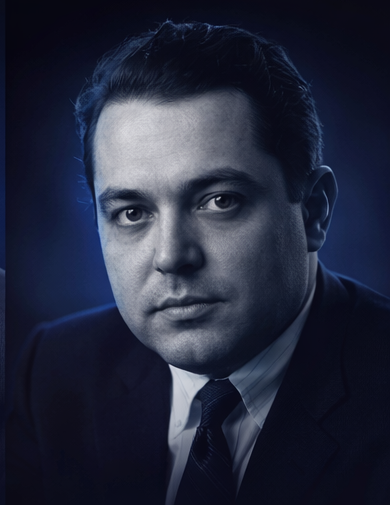

Magnus Carlsen
Magnus Carlsen
Elo max: 2882 👑
Norvège. Joueur universel, redoutable en finales et dans les positions égales. Référence absolue de la régularité au plus haut niveau.
Palmarès, styles de jeu et Elo max des légendes de l'histoire.
Le plus haut Elo classique jamais atteint est 2882, établi par Magnus Carlsen. Ce score reste la référence moderne de performance.
Joueur
Norvège
Elo classique maximal
Atteint en mai 2014
Champion du monde classique de 2013 à 2023.
Technique de finale, précision et pression continue.
Standard moderne du très haut niveau en régularité.
Elo max: 2882 👑
Norvège. Joueur universel, redoutable en finales et dans les positions égales. Référence absolue de la régularité au plus haut niveau.

Elo max: 2851
URSS / Russie. Style explosif, préparation théorique immense, domination de la fin des années 1980 aux années 2000.
Elo max: 2844
États-Unis. Très grande précision tactique et profonde compréhension stratégique. Challenger du titre mondial en 2018.
Elo max: 2830
Arménie. Créativité exceptionnelle, jeu dynamique et intuitif. L'un des joueurs les plus brillants de sa génération.

Elo max: 2817
Inde. Champion du monde emblématique, rapide en calcul et adaptable à tous les formats (classique, rapide, blitz).

Elo max: 2817
Russie. Connu pour son jeu positionnel profond et sa solidité défensive. Champion du monde ayant mis fin au règne de Kasparov.

Elo max: 2816
Bulgarie. Style agressif, très orienté initiative et complications. Figure majeure des années 2000.

Elo max: 2816
États-Unis. Spécialiste mondial des cadences rapides, mais aussi joueur d'élite en classique depuis de nombreuses années.

Elo max: 2780
URSS / Russie. Maîtrise positionnelle, prophylaxie et précision technique. Champion du monde historique de l'école soviétique.

Elo max: 2785
États-Unis. Icône des échecs modernes, champion du monde en 1972. Préparation d'ouverture révolutionnaire pour son époque.

Elo max: 2705
URSS / Lettonie. "Magicien de Riga", célèbre pour ses sacrifices spectaculaires et son sens de l'attaque.

Elo estimé (historique): 2725
Cuba. Légende des finales et de la simplicité efficace. Champion du monde dans les années 1920.
Super-élite mondiale: niveau historique exceptionnel et ultra rare.
Élite mondiale régulière: candidats au titre mondial et tournois majeurs.
Très haut niveau international: super grands maîtres confirmés.
Niveau grand maître: joueurs professionnels très forts.
Maîtres nationaux et internationaux, excellente compréhension du jeu.
Joueurs experts: solides tactiquement et stratégiquement.
Bon niveau de club: bonnes bases et peu de grosses erreurs.
Amateur confirmé: progression régulière et plan de jeu plus clair.
Amateur intermédiaire: principes acquis, encore des imprécisions.
Niveau débutant avancé: tactiques simples et développement correct.
Débutant: compréhension de base des règles et premiers plans.
Découverte des échecs: apprentissage des mouvements et de la tactique de base.